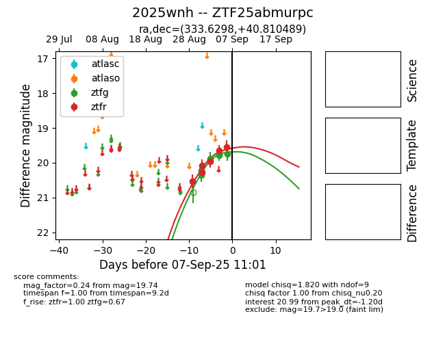

FINK: ZTF25abmurpc
Lasair: ZTF25abmurpc
ALeRCE: ZTF25abmurpc
TNS: 2025wnh
YSE: 2025wnh
ZTF25abmurpc (ztf,fink)
2025wnh (tns,yse)
equatorial (ra, dec) = (333.6298,+40.81049)
galactic (l, b) = (93.5173,-12.93101)

last atlaso=19.46, ztfg=20.03, ztfr=19.50
3 atlaso, 15 ztfg, 15 ztfr detections